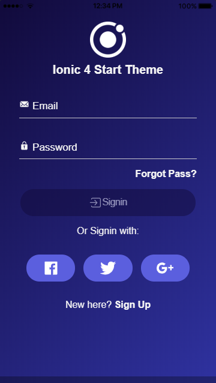

<ion-content [fullscreen]="true">
  
</ion-content>
<ion-tabs>
  <ion-tab-bar slot="bottom">
    <ion-tab-button tab="subjects">
      <ion-icon name="calendar"></ion-icon>
      <ion-label>Schedule</ion-label>
    </ion-tab-button>
  </ion-tab-bar>
</ion-tabs>